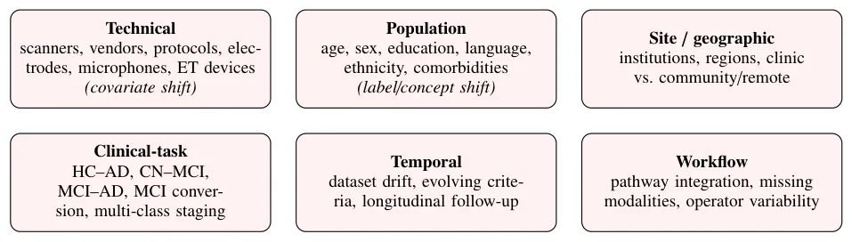
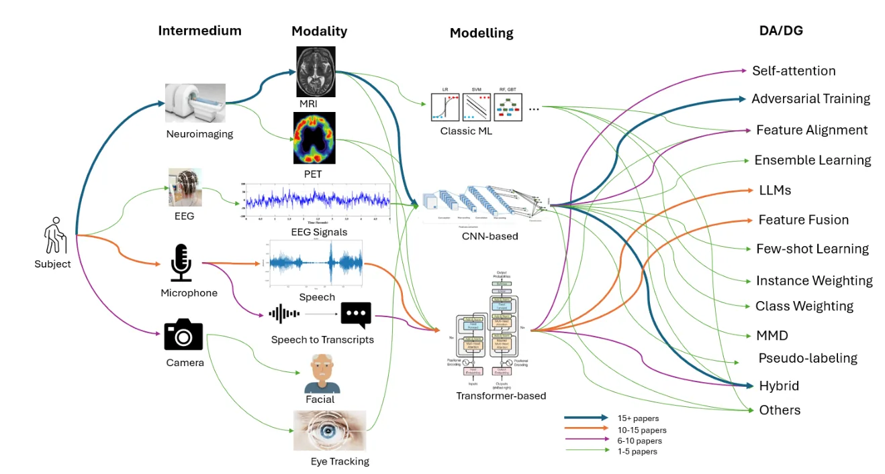
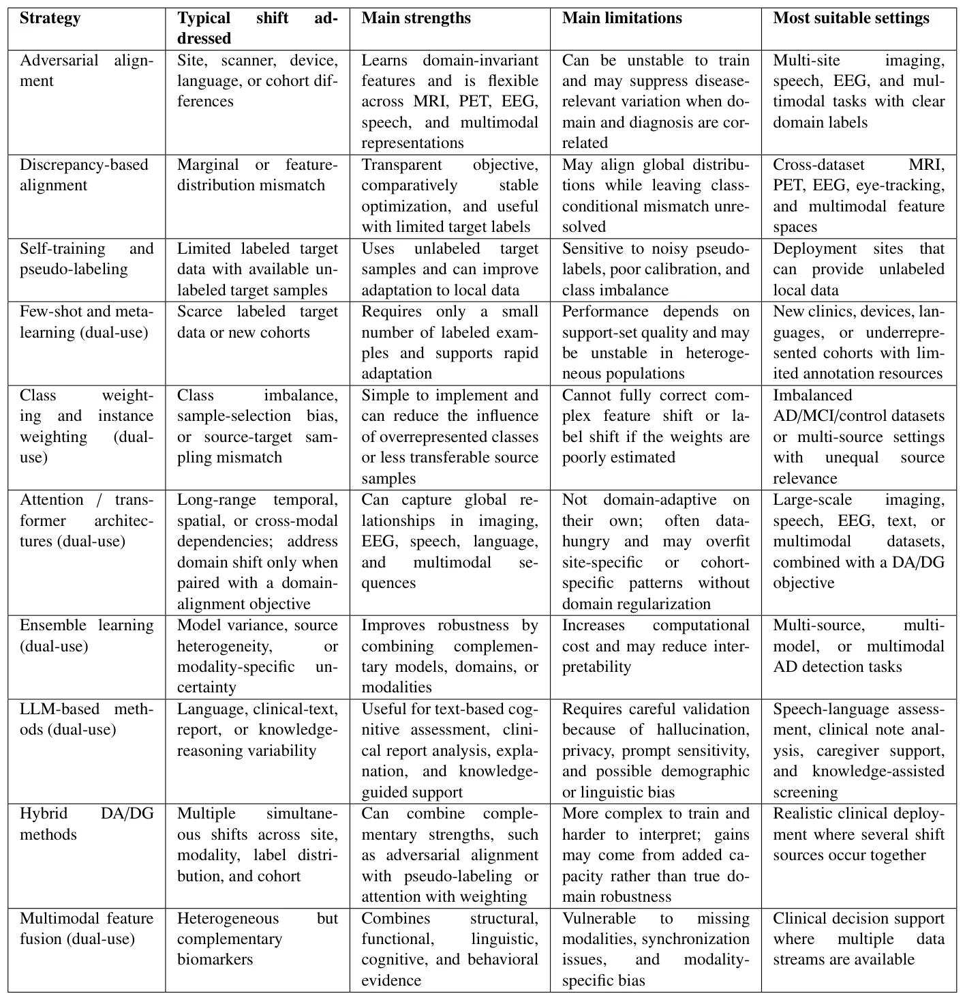

O Problema da Generalização em IA Médica
A detecção de Alzheimer (AD) por meio de aprendizado de máquina (ML) tem avançado rapidamente, mas esbarra em um obstáculo clássico da ciência de dados: a falha na generalização. Modelos treinados em um dataset (fonte) frequentemente performam mal quando aplicados a dados de outra fonte (alvo), devido ao que chamamos de 'domain shift'. Isso ocorre porque as distribuições de dados mudam entre hospitais, dispositivos ou populações.
Um estudo recente, 'Improving the Clinical Generalizability of Machine Learning-Based Alzheimer’s Disease Detection Across Domains and Modalities: A Comprehensive Review', conduzido por pesquisadores da University of Alberta, Hebei University e Saskatchewan Polytechnic, mapeia como as técnicas de Domain Adaptation (DA) e Domain Generalization (DG) tentam resolver isso. O foco não é apenas aumentar a acurácia em benchmarks fechados, mas garantir que os sistemas sejam clinicamente confiáveis em cenários reais.

O Que é Domain Adaptation e Generalização?
Para entender a contribuição deste paper, é preciso distinguir duas estratégias. A Domain Adaptation (DA) assume que temos dados do domínio alvo (mesmo que sem rótulos) e tenta alinhar a distribuição dos dados de treino com a do alvo. Já a Domain Generalization (DG) tenta aprender representações que sejam invariantes ao domínio, permitindo que o modelo funcione em dados nunca vistos, sem nenhum acesso ao domínio alvo durante o treino.
O paper organiza a revisão em torno de seis dimensões de variabilidade clínica. Essas dimensões vão desde a origem dos dados (site/geográfico) até características dos pacientes (idade, sexo) e a modalidade de coleta. A maioria dos estudos revisados avalia apenas a generalização técnica (cross-dataset) e, com menos frequência, a generalização clínica real (cross-site com populações diferentes).
Modalidades: O Dominio da Neuroimagem e o Despertar de Novas Vozes
A revisão abrange múltiplas modalidades: neuroimagem (MRI e PET), EEG, eye-tracking (ET), fala e multimodalidade. Como mostra a Figura 4, a neuroimagem ainda domina a pesquisa. Estudos com MRI mostram ganhos consistentes de 5% a 22% na acurácia do domínio alvo ao usar DA. Modelos como 3D CNNs, ResNets e ViTs são adaptados para lidar com variações na aquisição de imagens entre scanners de diferentes hospitais.
No entanto, o paper destaca um movimento crescente para modalidades mais acessíveis. O EEG, por exemplo, oferece alta resolução temporal e baixo custo. Estudos com EEG usam DA adversarial e fusão de características temporais/espectrais para classificar AD versus controles saudáveis, alcançando acurácias superiores a 90% em datasets cruzados. Da mesma forma, a análise de fala, impulsionada por LLMs, identifica mudanças sutis na coerência linguística e padrões acústicos, oferecendo uma via não invasiva para triagem precoce.

Mecanismos: Como os Modelos se Adaptam?
A Tabela 3 sintetiza as estratégias técnicas. As abordagens adversariais são as mais comuns em neuroimagem. Elas adicionam um 'domínio discriminador' ao modelo que tenta prever a origem dos dados. O objetivo é treinar o extrator de características para enganar esse discriminador, forçando-o a aprender atributos invariantes ao domínio. O problema? Esses métodos podem ser instáveis e, ao remover variações de domínio, podem também apagar sinais clínicos relevantes.
Já os métodos baseados em discrepância (discrepancy-based) medem a diferença entre as distribuições das fontes e do alvo (usando métricas como MMD - Maximum Mean Discrepancy) e minimizam essa distância. São mais estáveis e transparentes, mas podem não preservar bem os limites entre as classes clínicas. Além disso, há um crescimento no uso de auto-treinamento (self-training) e aprendizado por poucos exemplos (few-shot), úteis quando há pouca ou nenhuma etiqueta no domínio alvo.
Resultados: Ganhos Reais e Limitações Técnicas
Os resultados mostram que DA/DG realmente melhora a robustez. Em MRI, modelos adaptados superam baselines em até 22% em cenários de domínio alvo desconhecido. No EEG, a pré-treinamento auto-supervisionado em grandes datasets públicos, seguido de fine-tuning, melhorou o F1-score em até 9.86%. No entanto, esses ganhos técnicos não se traduzem automaticamente em utilidade clínica.
O paper nota que a maioria dos estudos foca em classificação binária (Controle Saudável vs. Alzheimer) ou trinária (CN, MCI, AD). A detecção de MCI (Déficit Cognitivo Leve) é crucial, pois é a janela para intervenção, mas é mais difícil devido à sobreposição de sintomas. Estudos que abordam MCI mostram ganhos menores e maior variabilidade, indicando que a tarefa é muito mais complexa do que separar doentes de saudáveis.

O Gap entre o Lab e o Consultório
A conclusão mais honesta do paper é que ainda estamos longe da implantação clínica rotineira. As limitações incluem: 1) Falta de validação externa em populações representativas; 2) Baixa interpretabilidade dos modelos de deep learning; 3) Complexidade computacional que dificulta o uso em tempo real; e 4) Preocupações com privacidade no compartilhamento de dados entre instituições.
Além disso, a maioria dos sistemas ignora a incerteza. Um modelo que diz 'Alzheimer' com 95% de confiança, mas com base em artefatos de domínio (ex: ruído de um scanner específico), é perigoso. O paper argumenta que sistemas de suporte à decisão devem reportar intervalos de confiança e desempenho por subgrupos (idade, gênero, etnia) para evitar viés algorítmico.
Caminhos Futuros: Transparência e Multimodalidade
Para avançar, os autores propõem prioridades claras. Primeiro, padronização de benchmarks multi-site e multimodal. Segundo, relatórios transparentes que incluam a definição do domínio, o tipo de shift, a disponibilidade de dados alvo e o protocolo de validação. Terceiro, desenvolvimento de métodos de adaptação leves e preservadores de privacidade.
A multimodalidade é vista como promissora, mas desafiadora. Combinar MRI, EEG e fala pode capturar aspectos complementares da doença, mas exige lidar com dados faltantes (modalidades ausentes em alguns pacientes) e viés específico de cada modalidade. O futuro não está em um modelo único, mas em sistemas híbridos que possam se adaptar a diferentes contextos clínicos sem perder a precisão diagnóstica.
O que fica
- A neuroimagem (MRI/PET) domina a literatura, mas EEG, voz e eye-tracking ganham força como alternativas não invasivas.
- Métodos adversariais são poderosos, mas instáveis; métodos baseados em discrepância são mais estáveis e interpretáveis.
- A maior lacuna não é técnica, mas clínica: falta validação externa rigorosa, transparência e integração em fluxos de trabalho reais.
Comentários
Nenhum comentário ainda. Seja o primeiro.